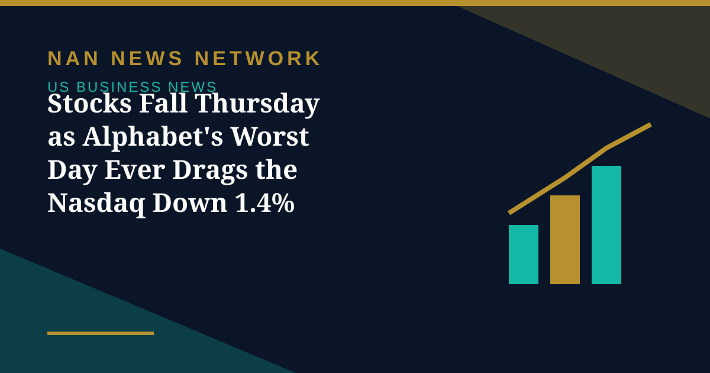

Stocks Fall Thursday as Alphabet's Worst Day Ever Drags the Nasdaq Down 1.4%

US stock markets closed lower on Thursday, October 29, ending a three-day winning run, as disappointing earnings and guidance from AI-powered corporate giants dented confidence in risky assets and an elevated inflation reading hurt sentiment.
How the benchmarks performed
The Dow Jones Industrial Average fell 0.3%, or 132.54 points, to close at 52,342.56, though 23 of its 30 components ended in positive territory. The tech-heavy Nasdaq Composite ended at 26,184.72, sliding 1.4%, or 365.13 points, on weak performance by AI leaders. The S&P 500 shed 0.3% to finish at 7,720.39, even as nine of its 11 sectors closed higher, led by health care and real estate. The fear gauge, the CBOE Volatility Index, rose 1.7% to 17.20.
The Russell 2000 bucked the trend, gaining 1.01% to 2,859.22, and four in five S&P 500 stocks rose — a sign the damage was concentrated in the biggest technology names rather than the broader market.
Alphabet leads the slide
Alphabet's Class A shares dropped 12.6% in their worst day since they began trading more than 20 years ago, after third-quarter revenue and adjusted earnings missed expectations and raised concerns about cash depletion from AI investment. Fortinet fell 20.1% and ServiceNow 27% after their own results, with ServiceNow also suffering its worst single-day performance on record, according to Zacks.
Economic data added to the gloom: initial jobless claims decreased by 1,000 to 194,000 for the week ended October 24, below expectations, but September inflation data released alongside the GDP report kept the focus on price pressures. Treasury yields eased after the Fed and European Central Bank holds, with the 10-year yield closing at 4.98%, down 7 basis points.
What Friday brought
The selling did not stop at Thursday's close. Amazon and Intel reported after the bell, and Nasdaq futures fell more than 2% on Friday morning as their results deepened concerns over AI spending. Despite Friday's decline, the S&P 500 and Nasdaq remained on course for weekly gains, though the Nasdaq was headed for its first monthly decline in three months.
Sources: Zacks, FinancialAdvsr, Economic Times, October 29-30, 2026
More on US Business News
- US Labor Costs Rose 0.8% in Q3 as Wage Growth Slowed, Easing — but Not Erasing — Inflation Fears
- Fed Holds Rates at 3.75%–4% in 10–2 Vote as Warsh Says Politics Played No Role
- US Economy Grew 3.4% in Q3, Fastest in a Year, Beating Forecasts
- Wall Street Rallies for Second Day as AI Stocks Lead Ahead of Fed Decision
- Fed Decision Day: Markets Price a Hold as Warsh Faces First Big Test
- Anthropic IPO Filing Lifts Stocks as Wall Street Rallies
- Broadcom's $63 Billion Financing Powers Anthropic Technology Deal
- Wall Street Heads Into Fed Week as Oil Near $117 and Stocks Slip
- Trend Hedge Funds Suffer Worst Week Since 2024 as AI Stocks Slide, Goldman Says
- Meta Lifts 2026 AI Spending Toward $145 Billion and Adds a Nonvoting Stock Class
- OpenAI Nears a $30 Billion Round at a $1.25 Trillion Valuation, Reports Say
- Rivian Buys UK Startup Third Dimension to Build Its Robotaxi Simulator